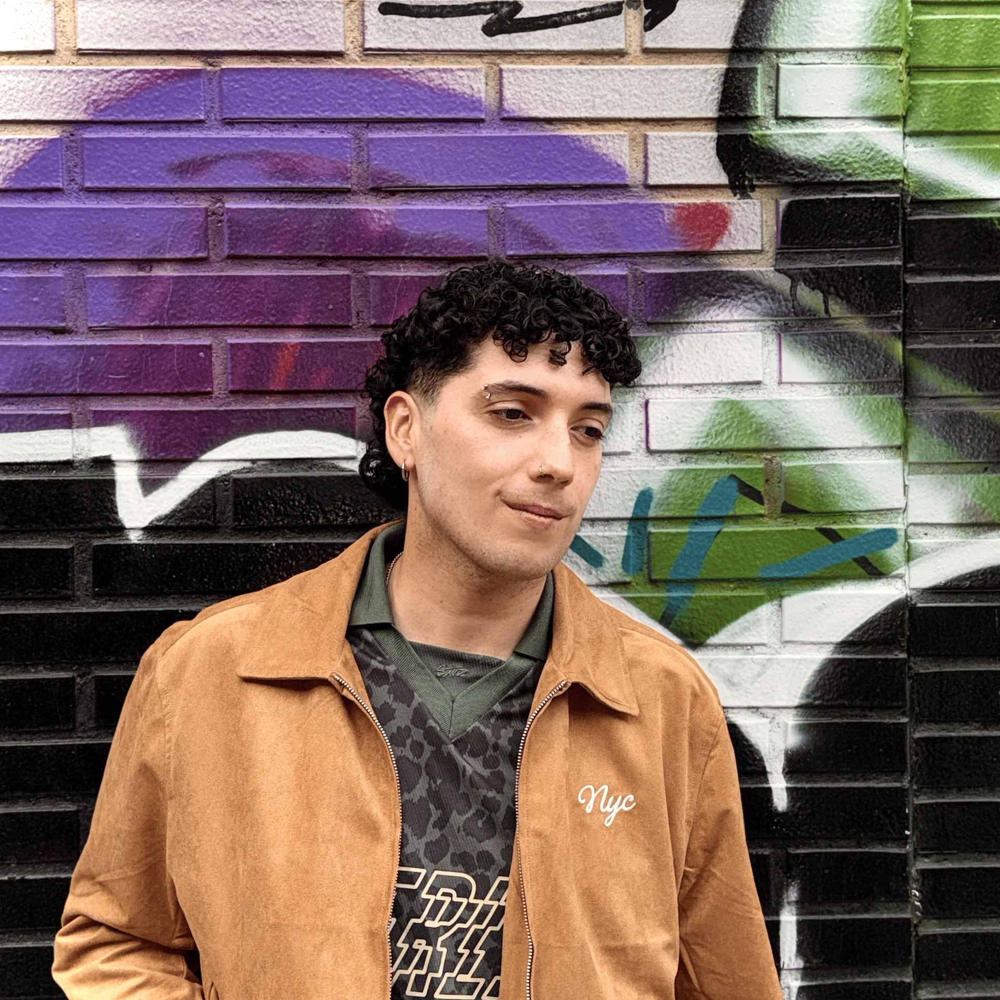

Sobre mí

Soy una persona creativa con interés por el diseño y el desarrollo web, especialmente por la forma en la que una idea puede transformarse en una experiencia digital. Me gusta explorar nuevas posibilidades, experimentar con diferentes estilos visuales y encontrar maneras de combinar estética, funcionalidad e interacción para crear páginas web con personalidad propia.
e interesa especialmente el diseño frontend, donde puedo unir la parte visual con el código para dar vida a interfaces dinámicas, atractivas y fáciles de utilizar. Disfruto trabajando con la composición, la tipografía, los colores, las animaciones y los pequeños detalles que hacen que una web destaque y transmita una identidad.
Entiendo cada proyecto como una oportunidad para aprender, desarrollar nuevas habilidades y superar retos creativos y técnicos. Me gusta investigar, probar ideas y buscar soluciones que no solo funcionen correctamente, sino que también aporten valor a la experiencia del usuario.
Mi objetivo es seguir creciendo en el mundo del diseño y desarrollo web, ampliar mis conocimientos y participar en proyectos que me permitan experimentar, aportar ideas y convertir conceptos en experiencias digitales cuidadas y memorables.
Educación
Título superior en diseño digital
CEI - Valencia
Máster de Diseño Web
CEI - Valencia